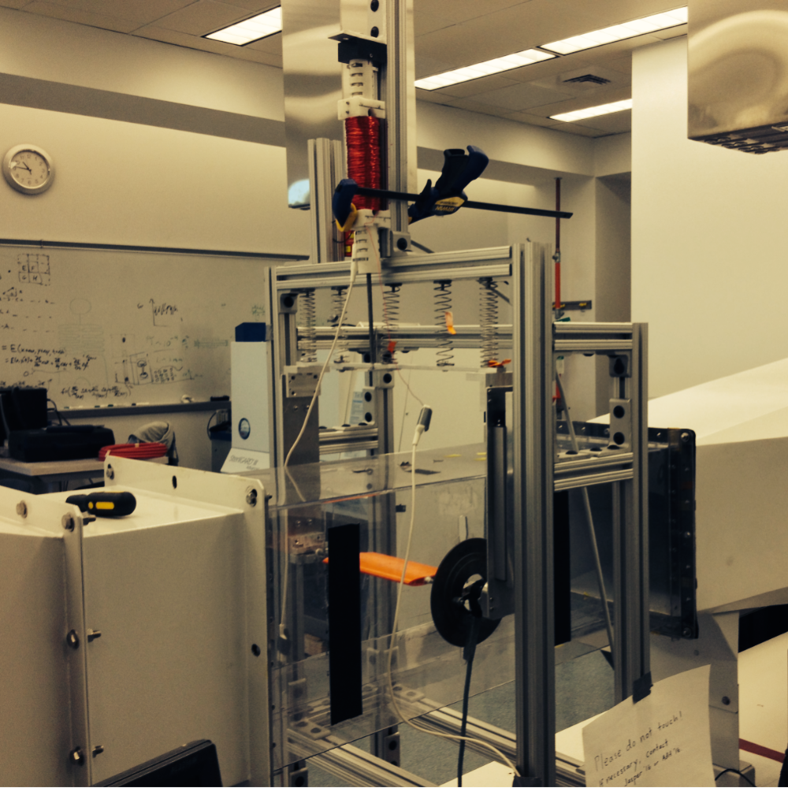

I worked on research with one other person on building and modeling an energy harvester, that takes advantage of vibration. This was a research project that was worked on for multiple years. I worked on redesigning specific parts of the test rig and improving the mathematical model we had for the system.
One section of the test rig I redesigned was the torsional setup of an airfoil. I completely redesigned weights on the end of a torsional rod to be modular, so the system could easily be modified for various tests.


I also worked on redesigning the energy harvester, which consists of a pvc tube, with two fixed magnets on either end, and one floating magnet in the middle, which is attached to the airfoil. I helped redesign the system so that it could have a variable number of magnets on either end and a mounting piece to fix to harvester to the test rig.